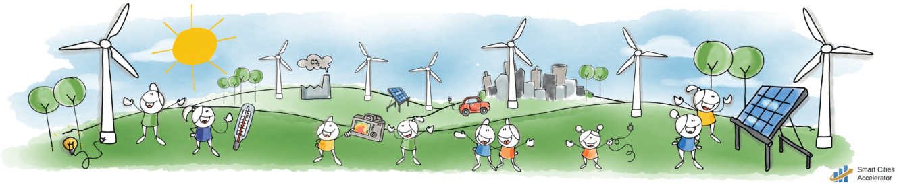

Energiexperiment
Detta material är en följd av övningar och är indelat i olika områden. Område väljs från översta nivån av flikar. Övning väljs från nästa nivå av flikar.
Inomhusklimat
Eleven i kammaren
Frågeställning
Hur tror du att temperaturen i ett rum påverkas av att det finns människor i rummet? Hur påverkas människokroppens temperatur av att det är hög temperatur i rummet?
Materiel
1 kammare på ungefär 1 kubikmeter: stor låda, bås, toalett eller städskrubb. 1 digital termometer som mäter temperaturen i kammaren. T.ex. kan en digital termometer för inne- och utetemperatur användas. 1 termometer för kroppsbruk(kontakt), eller termometer som inte kräver kroppskontakt. Med IR-kamera mäts temperaturen vid ögonkanten mot näsan.
Vid användning av låda. Ställ lådan på golvet på ett sådant sätt att lådan har väggar och tak. Skär ut längs två kanter på en kortsida så att den uppkomna luckan kan fällas upp och man kan krypa in i lådan, och fälla ner luckan och stänga.

Experiment
I stället för att direkt mäta i ett klassrum med elever mäter vi i ett litet rum, en kammare, och med endast en människa. Försök sedan dra slutsatser om vad som händer i ett helt klassrum med elever.
• Avläs temperaturen i kammaren. Mät personens temperatur.
• Låt en person sätta sig inne i kammaren. Studera temperaturökningen i kammaren; sitt inte så länge att luften känns obehaglig. Anteckna temperaturökning och tid som personen varit i kammaren. Mät personens temperatur.
• Vädra ut kammaren så temperaturen sjunker tillbaka till rumstemperaturen. Väggarna måste också få lite tid på sig.
• Upprepa laborationen igen, men låt personen, samma som tidigare, hoppa hopprep, göra armhävningar eller springa upp och ner i en trappa innan personen placerar sig i kammaren igen. Mät som tidigare.Uppföljning
• Vilken temperatur (cirka) har din kropp? Vid vila och vid ansträngning (t.ex. hopprep)? (IR-kameran kanske inte ger korrekt temperatur men den mäter ändringar korrekt.)
• Varifrån kommer energin som ökar temperaturen i luften i lådan? Vad hade hänt med temperaturen om du placerat ett värmeljus i lådan i stället för din kropp? Vad förbränner lågan, vad förbränner din kropp?
• Vad händer med temperaturen i ett rum med volymen 200 kubikmeter fyllt med 30 människor (ett vanligt klassrum)?
• Hur kan din kropp hålla sin temperatur konstant fastän temperaturen hos luften i klimatkammaren inte är konstant?Energiförluster
Luften flyttar energi
Frågeställningar
Hur flyttas energi med hjälp av luft?

Material
Ca 15-20 värmeljus placerade i ring. Fransat silkespapper eller liknande för att detektera luftström.
Experiment
• Placera värmeljusen i en ring och tänd dem.
• Observera förändringen hos värmeljusen. Ha gärna ett enstaka värmeljus en bit sidan om för att kunna jämföra och se förändringen.
• Placera t.ex. fransat silkespapper i mitten av ringen en bit ovanför ljusen och observera vad som händer. Se upp det är varmt!Uppföljning.
• Hur tolkar du förändringen hos värmeljusen?
• Vad händer med det fransade silkespapperet? Hur tolkar du det?Energin strålar bort
 Termografia_katt.jpg
Termografia_katt.jpg

Föremål med hög temperatur lyser: järn i en smältugn lyser rött, solen är 6000 °C på ’ytan’ och lyser vitt för våra ögon.
Föremål med temperaturen 1300 °C lyser för våra ögon med en bländande vit färg; glasögon som skyddar mot ultraviolett (UV) strålning behövs. Vid 950 °C är föremål röda mot orange, och nedåt 500 °C svagt mörkt röda. Vid lägre temperaturer strålar föremål fortfarande men med ljus som inte är synligt för våra ögon. Ett föremål vid rumstemperatur, ca 20 °C, sänder inte ut någon strålning som människan kan se; strålningen som sänds ut ligger i det infraröda (IR) området och längre våglängder, se figur 1.
Alla föremål avger således elektromagnetisk strålning oavsett temperatur. Universum har en temperatur på cirka -270 °C, denna strålning kallas för den kosmiska bakgrundsstrålningen och är i mikrovågsområdet.
Med hjälp av en IR-kamera kan vi detektera den infraröda strålningen från föremål i vår omgivning. Eftersom även osynlig infraröd ’färg’, beror på temperaturen kan vi bestämma föremålets temperatur genom att observera ’IR-färgen’ med hjälp av IR-kameran.
Kamerans funktion
Eftersom vi inte kan se ’IR-färgerna’ ändrar IR-kameran dem till för oss synliga färger, en slags kod. I regel väljer kameran ljusare färger för högre temperaturer, se bilden av katten. Ibland ändrar kameran sin skala beroende på hur stora skillnader i temperatur det är i bilden; då stannar den en stund och kalibrerar om skalan. Temperaturen som anges av kameran gäller för bildens mitt. Kameran har 2 linser så den tar en vanlig bild i det synliga området, letar upp kanter i den bilden och lägger sedan kanterna på IR-bilden; detta för att du lättare ska kunna hitta föremålen.
Experiment
Till följande experiment används en IR-kamera.
1. En kopp med kallt vatten och en med varmt vatten ser lika ut för våra ögon men hur ser IR-kameran dem? Vilken kopp avger mest energi i form av strålning? Var i huset i bilden läcker det mest energi genom strålning?
2. Undersök om följande föremål är genomskinliga (kan du se koppen med varmt vatten genom materialet) för IR-strålning:
a) Glasskiva.
b) Träskiva.
c) Plastskiva.
d) Aluminiumfolie.
e) Svart sopsäck. (Stoppa in din arm.)
f) Solskydd för bilfönster.
g) Valfritt.
h) Reflekterar några av föremålen i listan, a-g, IR-strålning?
3. Om man tittar på en människokropp med hjälp av en IR-kamera kan man se hur temperaturen varierar. Sjukdomar kan detekteras med en IR-kamera. Var har du högst respektive lägst temperatur på din kropps hud? Var avger du mest energi i form av strålning? Jämför med katten i bilden.
4. Om du har en mobiltelefon undersök om den kan detektera ljuset från en fjärrkontroll (IR-diod) med hjälp av mobilens kamera. Mobiltelefoners kameror är ibland känsliga för IR-strålning.
5. Från en järnbit med temperaturen 1300 °C kommer så mycket UV-strålning att vi måste skydda våra ögon med UV-skydd. Från solen som är 6000 °C borde det komma mycket stora mängder UV-strålning. Trots det kan vi se ett kort ögonblick på solen utan att ögonen blir förstörda, hur kan det vara så?Energikällor
Solceller
Frågeställning
Vilka faktorer styr effekten som kan erhållas från en solcell?
Material
En solcell större än 1 kvadratdecimeter.
Ställning som kan hålla solcellen fast i olika vinklar. Enklast om solcellen kan roteras kring en axel.
Voltmeter, amperemeter eller wattmeter.
Tjockt svart papper. Helt ogenomskinligt.
En liten tavla att redogöra för resultat på.
Alega har solceller som ger 2 V och 0,5 A. 11,5x8,2 cm. 87,50 kr. De har också plastspeglar 10x8 cm för 30 kr.
Experiment
Rikta en solcell mot solen, använd gärna ett stativ eller hållare.
Mät spänning och ström från solcellen, eller effekt. Ändra solcellens vinkel i förhållande till solen; vad blir det för effekt beroende på vinkel? Konstruera en graf som illustration. Resultatet betyder mycket för hur solceller kan användas.
Använd ett tjockt svart papper för att täcka solcellen i olika omfattning. Börja med att täcka en liten andel (ange i procent) och täck mer och mer. Hur beror effekten på hur stor andel som är täckt? Rita en graf för att illustrera. Resultatet betyder mycket för hur solceller ska skötas.
Även om solcellen är direkt riktad mot solen så blir effekten från solen mindre ju lägre solen står: Varför är det så? Jordens atmosfär är överdriven i bilden.
Uppföljning
Vilka faktorer är viktiga vid användning av solceller för att få största möjliga effekt? Mängden ljus, vinkeln mot solen, mängden absorption i atmosfären. Att solcellens yta är ren. Jämn belysning.
Varför ska en solcell helst se svart ut? Att den ser svart ut innebär att den absorberat allt ljus(i det synliga området).
Hur kan man få ännu mer solljus på solcellen utan att göra själva solcellen större? Genom att reflektera solljus från omgivningen. Dock finns det ett maximum så effektivast är det vid låg belysning. Även om man reflekterar ljus till solcellen så är det viktigt att den blir jämnt belyst, svagaste flödet bestämmer strömmen.
Angående första experimentet med solcell. Var på Jorden är det bäst? Hur högt stiger solen som högst under vintern i Sverige? Vilken årstid är det i Sverige på bilden? Rita läget för Jorden ett halvår senare. Vad innebär norra och södra vändkretsarna för solceller; de ligger cirka 23,5 grader norr respektive söder om ekvatorn?
I Sverige är det sommar, på södra halvklotet vinter. Solen stiger vid Malmös Latitud ca 10 grader över horisonten. Se även dette link.
